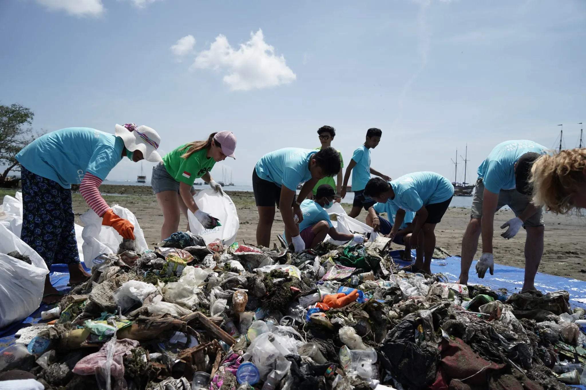
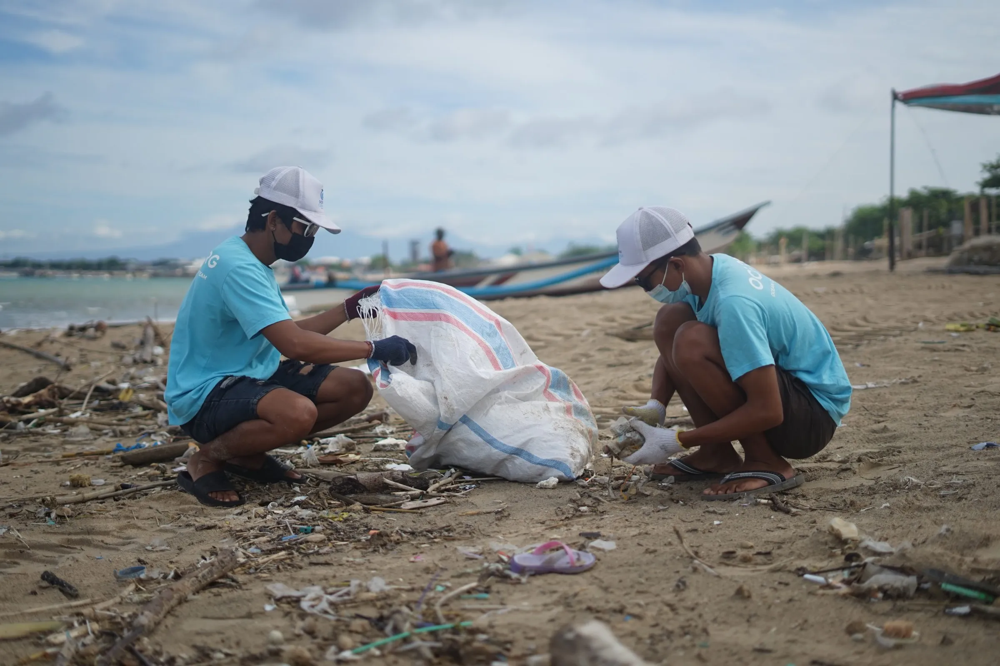
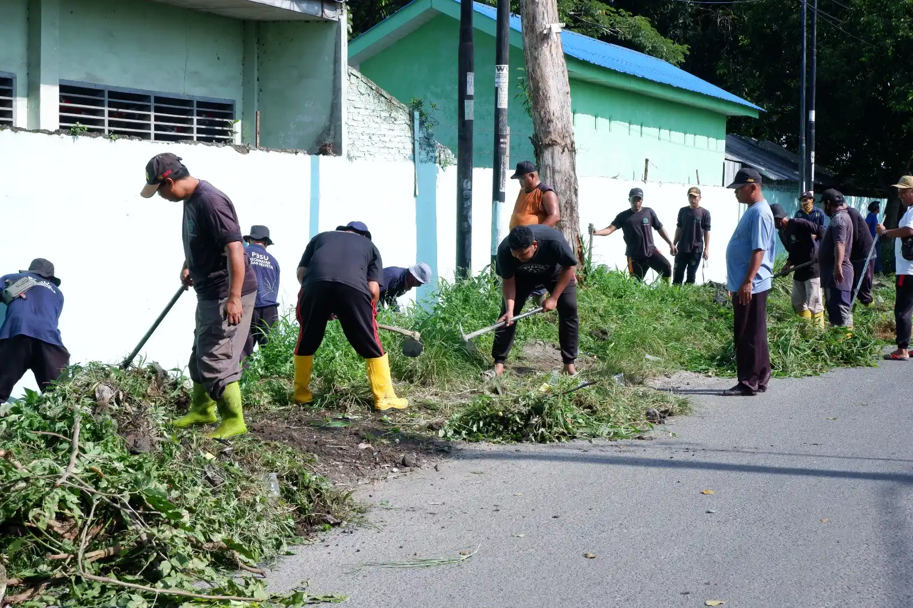
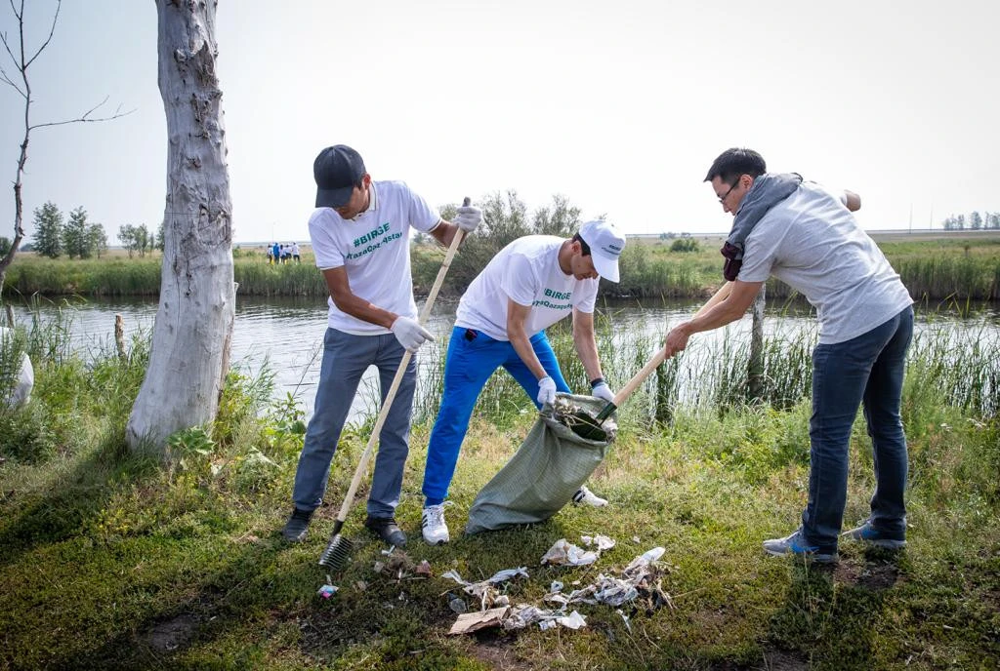
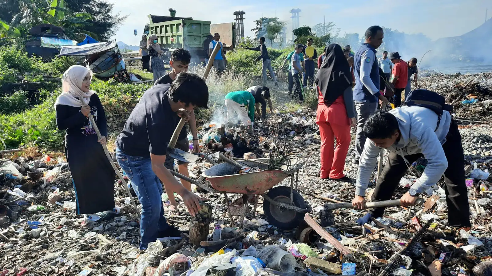
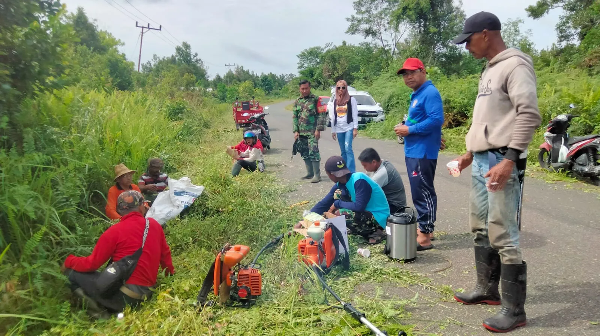
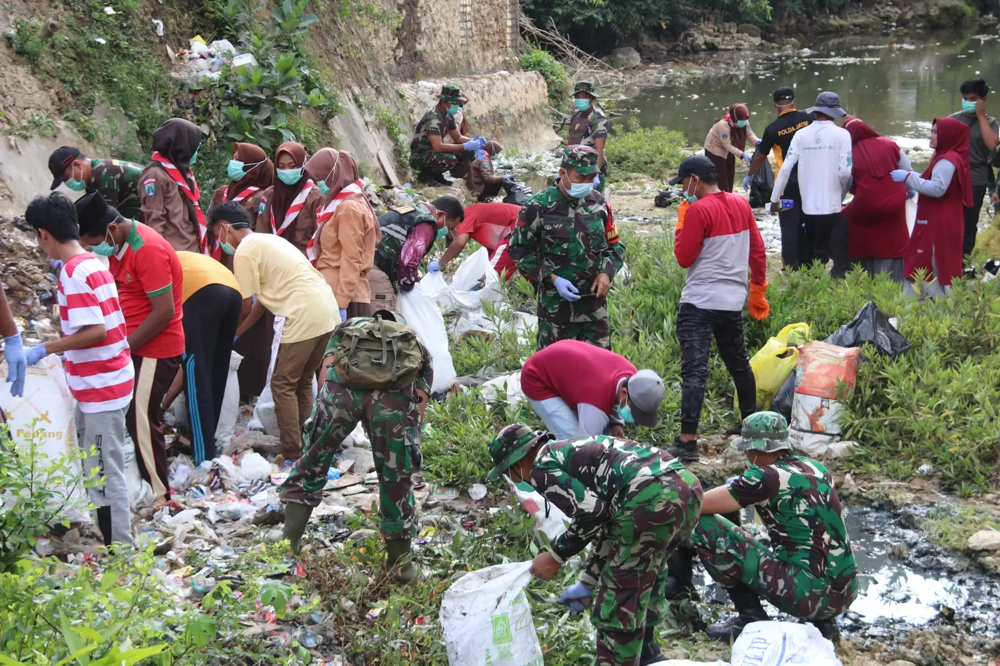
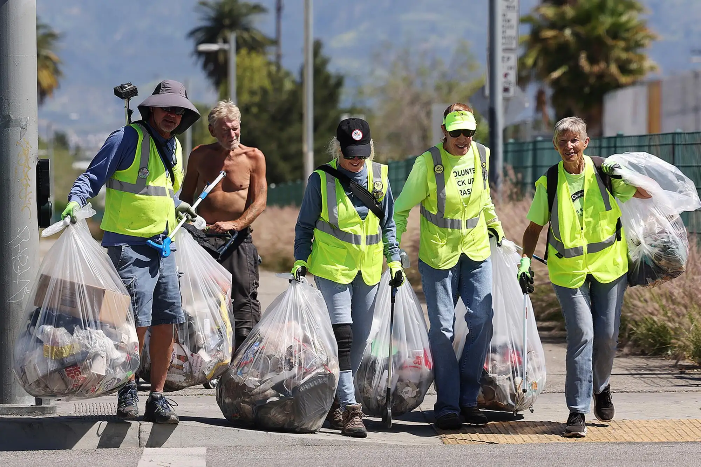
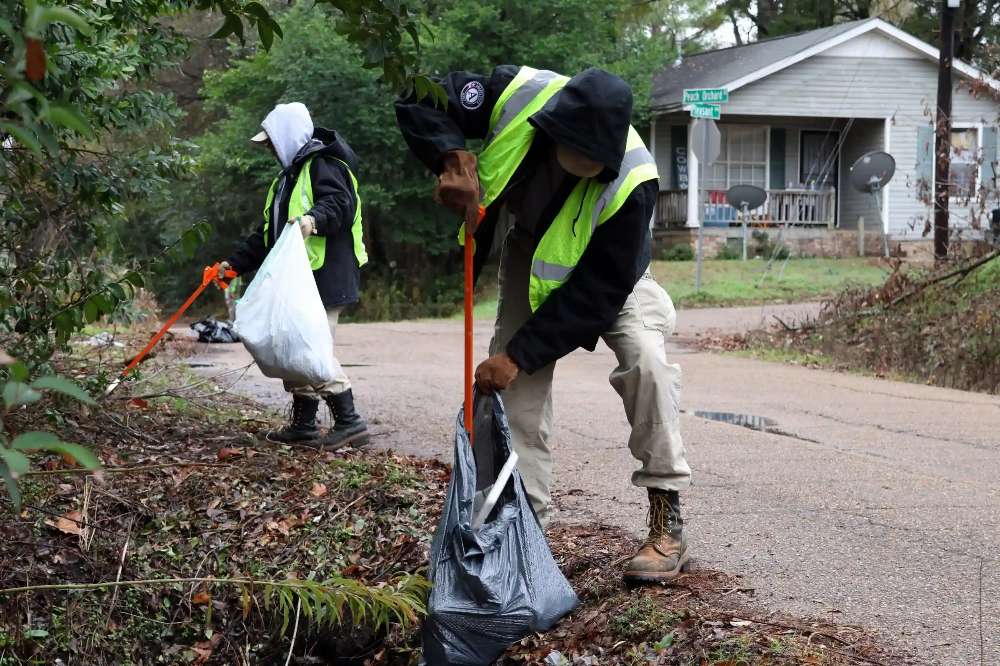
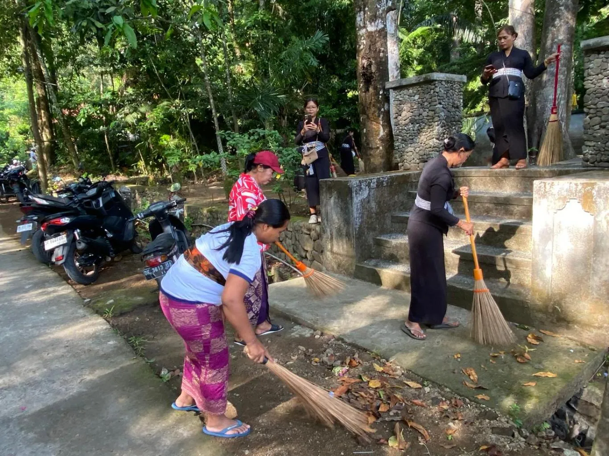

Selamat Datang Di
Bali Waste Management
Bersama Jaga Kebersihan Bali, Satu Laporan Setiap Waktu
Setiap laporan bisa jadi langkah awal dalam penanganan sampah di lingkunganmu. Tandai lokasinya, sertakan buktinya, dan biarkan tim terkait untuk ditindak lanjuti.
Sampah Masih Jadi Pekerjaan Rumah Besar Bagi Bali
Masalah yang Kita Hadapi
Bali menghadapi tekanan sampah yang terus bertambah setiap tahun, didorong oleh pertumbuhan penduduk dan tingginya kunjungan wisatawan. Sayangnya, kapasitas tempat pembuangan akhir semakin terbatas, sehingga banyak titik sampah liar bermunculan di pinggir jalan, aliran sungai, hingga kawasan pesisir akibat keterlambatan penanganan dan minimnya informasi lokasi yang akurat bagi petugas kebersihan.
Tujuan Bali Waste Management
Bali Waste Management hadir sebagai jembatan antara masyarakat dan pihak yang menangani kebersihan. Lewat laporan berbasis lokasi, siapa pun bisa menandai titik sampah bermasalah secara cepat, sementara petugas dan relawan dapat memantau serta memprioritaskan penanganan lewat peta interaktif yang selalu diperbarui.
Kenapa Kita Harus Peduli
Menjaga Ekosistem
Sampah yang menumpuk mencemari tanah, sungai, dan laut, sehingga mengancam kelestarian flora dan fauna khas Bali.
Menjaga Pariwisata
Keindahan alam adalah aset utama Bali; lingkungan yang bersih menjaga kenyamanan wisatawan sekaligus pendapatan masyarakat.
Menjaga Kesehatan
Tumpukan sampah yang tidak tertangani bisa menjadi sumber penyakit dan mencemari sumber air bersih warga sekitar.
Menjaga Budaya & Spiritualitas
Alam yang asri adalah bagian tak terpisahkan dari nilai budaya dan kehidupan spiritual masyarakat Bali sehari-hari.
Keunggulan Bali Waste Management
Respons Lebih Cepat
Laporan real-time membantu tim kebersihan menindaklanjuti titik sampah tanpa menunggu laporan manual yang lambat sampai.
Lokasi Presisi
Pinpoint pada peta memastikan petugas langsung menuju titik yang tepat tanpa salah alamat atau kehilangan waktu di lapangan.
Siapa Saja Bisa Berkontribusi
Tidak perlu jadi petugas resmi — warga maupun wisatawan bisa ikut menjaga kebersihan Bali lewat satu laporan sederhana.
Transparan & Terpantau
Perkembangan setiap laporan bisa dipantau bersama lewat peta interaktif, dari status aktif hingga selesai ditangani.
Perkembangan Laporan Dari Masyarakat
Total Laporan Dibuat
Laporan Selesai Ditangani
Area Terpantau Paling Banyak Laporan
Lokasi Terkini Dilaporkan
*Data di atas merupakan sebuah contoh dan akan diganti jika website sudah dihubungkan ke database.
Dokumentasi Aksi Bersih-Bersih Relawan









